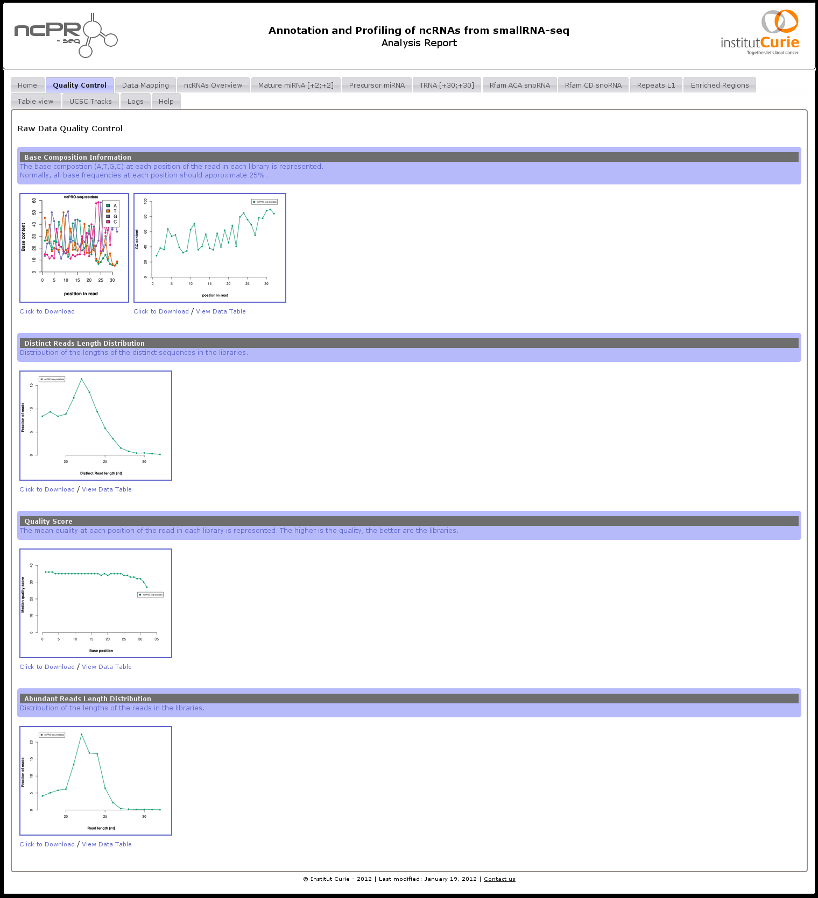

How to browse the results ?
Users just need to open "report.html" automatically created by ncPRO-seq in a web browser to easily view figures and tables which are originally stored in pic (for pictures) and doc (for table files) folder respectively, and to access track files in UCSC folder (Figure 9). The report file is composed of 7 types of tab. Briefly, each tab presents the pictures (or tables) generated by the pipeline. Each picture, and table can be visualized in high resolution, and/or download for further analysis.
- Home.
- The main page of the report list all samples and options used to perform the analysis, and the version of pipeline, used softwares and annotation files.
- Quality Control.
- All the quality controls performed on the raw input data are presented in this tab. The mean quality score, base, GC, and the insert length distribution are available.
- Data Mapping.
- As for the quality control, all the pictures regarding the alignment of reads on the reference genome are presented here. The reads length distribution, and the mapping proportion are available. These first controls give a good idea of the overall quality of the input libraries.
- ncRNAs Overview.
- The annotation overview of the different ncRNAs family is separated in pre-miRNAs, rRNA, repeat, rfam, protein coding gene and unknown. For the RFAM/repeats annotation, the ncPRO-seq pipeline count the number of abundant reads in each family and provides the relative proportion.
- ncRNAs Profiling.
- Then, for each ncRNAs specified in the configuration file (see section 5.4.2), and each samples, ncPRO-seq generate the coverage profile and the logo sequences. As for most of the analysis, both results at the reads or the sequence level are available. Regarding the logo sequences, both view (all sequences, or major sequence) are available (see section 5.4.7).
- Table view.
- All the table files generated by the ncPRO-seq pipeline can be browsed, visualized, and downloaded. The files are organized from general overview, to ncRNAs profiling information.
- Genome Tracks.
- The bedgraph or bed files generated by the pipeline can be downloaded and loaded in a standard visualisation tool, such as the http://genome.ucsc.edu/index.html UCSC browser [#!Dreszer2012!#]
- Logs.
- The log file of the ncPRO-seq process is printed here. Check this file in case of error.
- Help.
- This manual is available trough the report interface.
Figure 9:
ncPRO-seq HTML analysis report
|  |
Jocelyn Brayet
2015-02-12